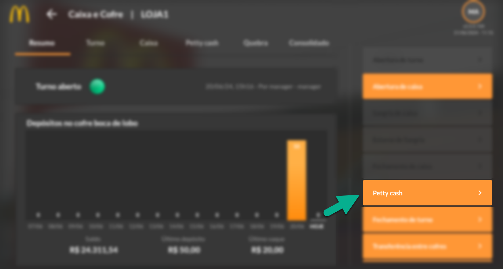
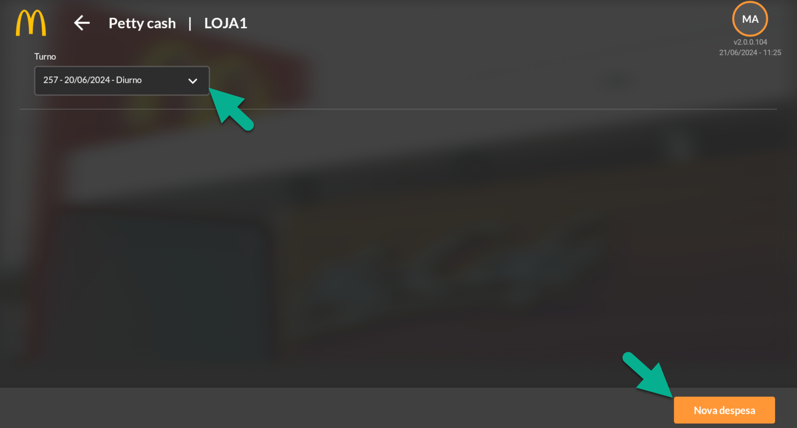
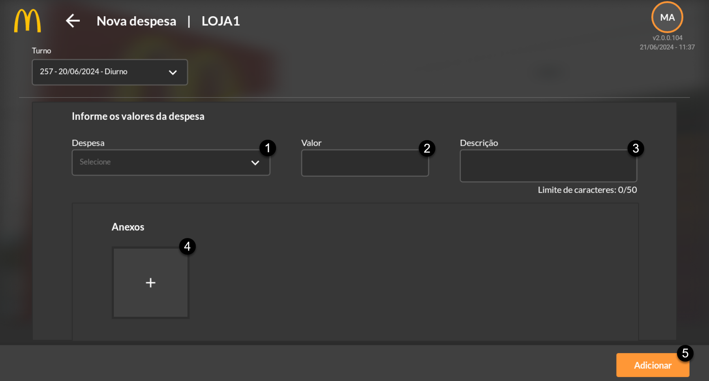
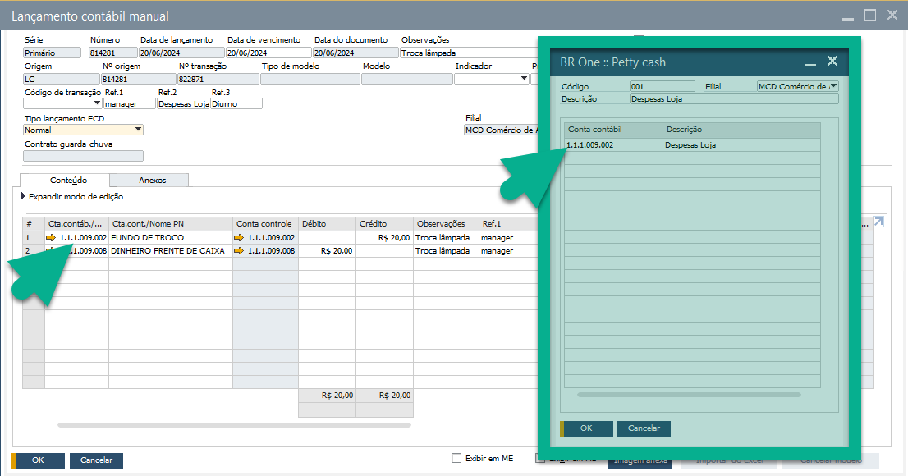
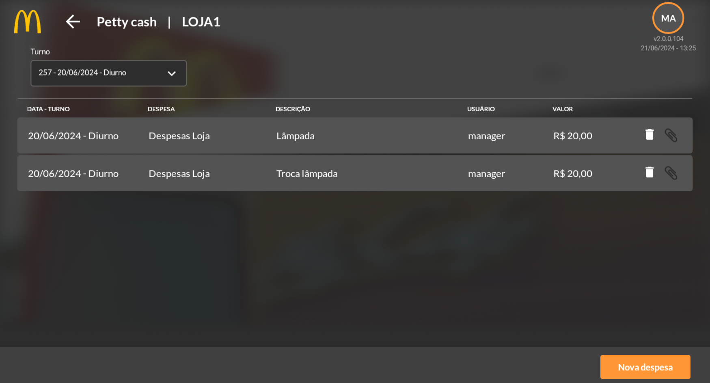
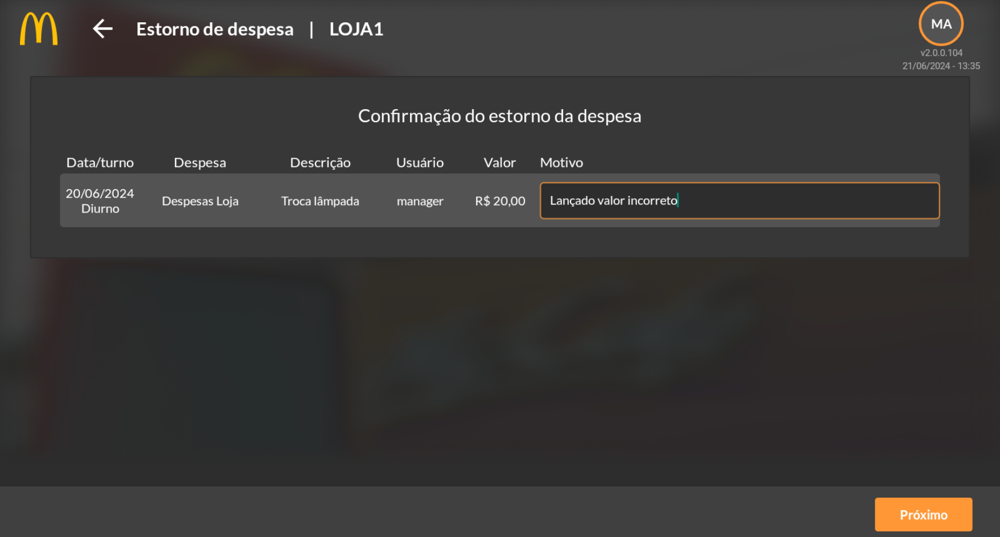

Petty Cash
Este módulo está relacionado com as despesas realizadas pela loja. Utilize essa função para manter registro de eventuais despesas que deverão ser previamente cadastradas no SAP, como demonstrado em Introdução desse documento. Acesse o módulo no APP.
{kind=link}
Ao selecionar o Petty Cash, verifique e defina o turno e clique em “Nova Despesa”.
{kind=link}
Defina a despesa (1) que deseja apontar, o valor (2) gasto, descreva o motivo da despesa (3), insira anexos (como por exemplo o comprovante da despesa e clique em adicionar (4).
{kind=link}
Ao clicar em adicionar, as despesas gerarão um lançamento contábil manual no SAP com um DÉDITO em DINHEIRO FRENTE DE CAIXA e CRÉDITO em FUNDO DE TROCO. A conta fundo de troco foi definida nas configurações das despesas cadastradas previamente no SAP, podendo ser alterada ou criado outras despesas relacionando a conta contábil desejada, por exemplo conta banco.
{kind=link}
As despesas lançadas ficarão disponíveis no aplicativo para visualização ou estorno se necessário.
{kind=link}
Clique no ícone da lixeira para estornar um lançamento. Defina um motivo do estorno.
{kind=link}
Clique em próximo para finalizar a ação. O lançamento será o inverso contabilmente do lançamento anterior.